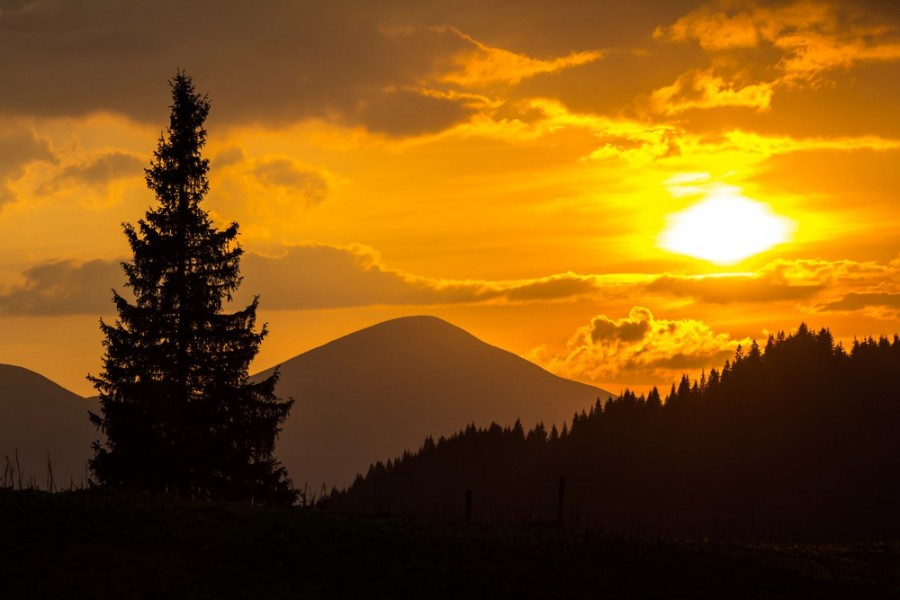
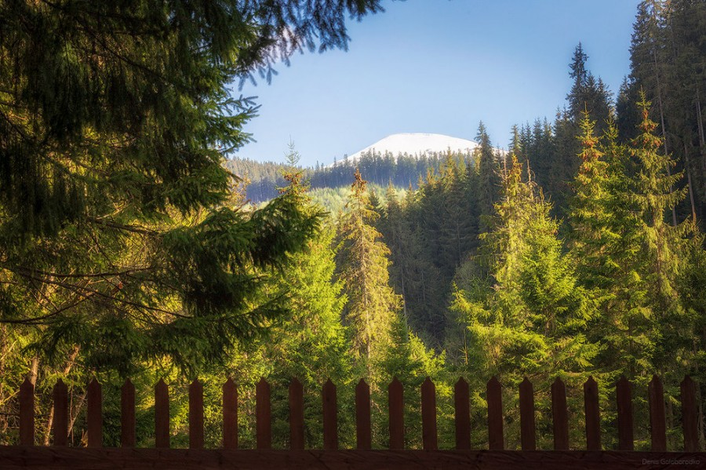
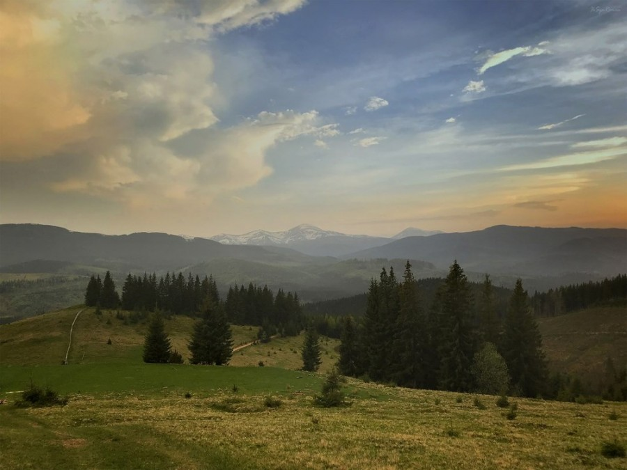
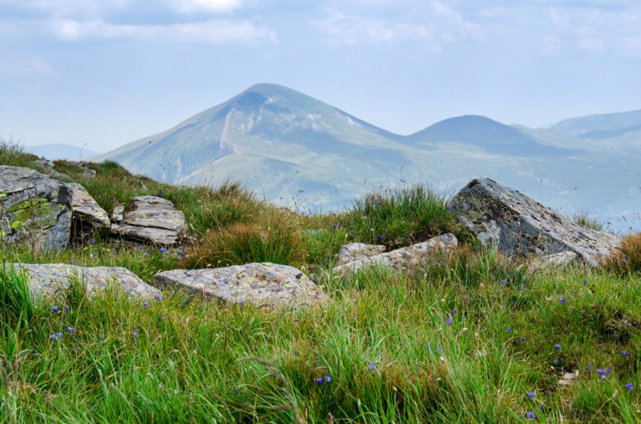
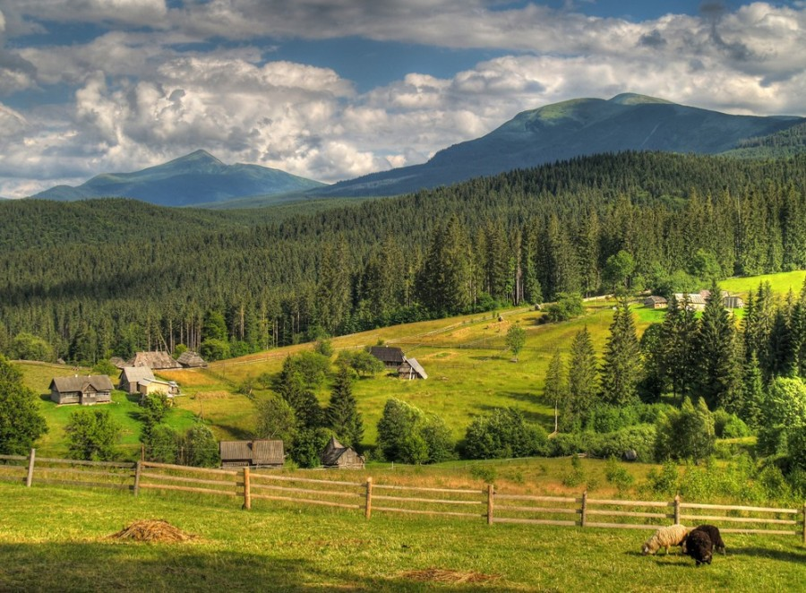
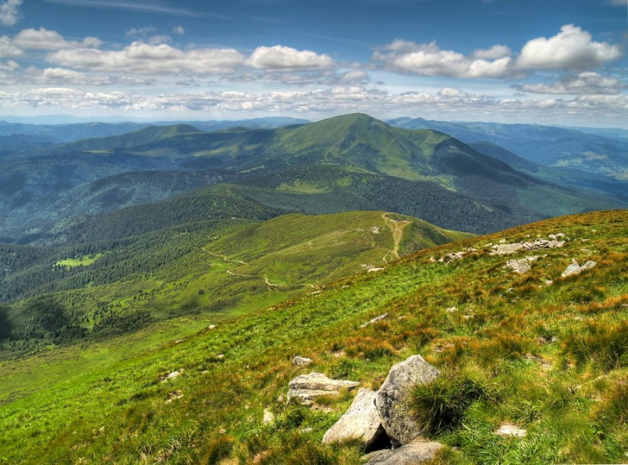
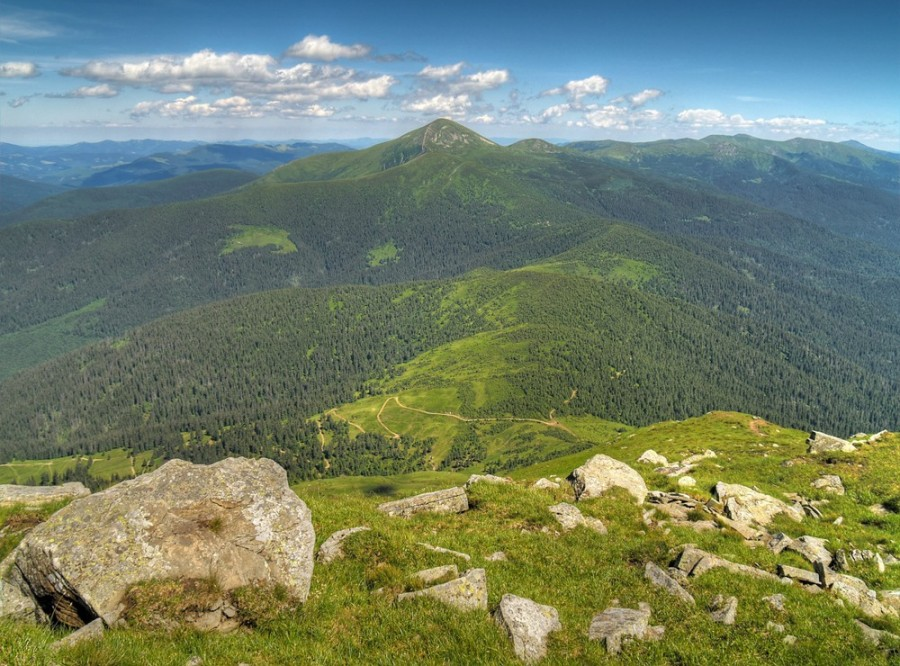
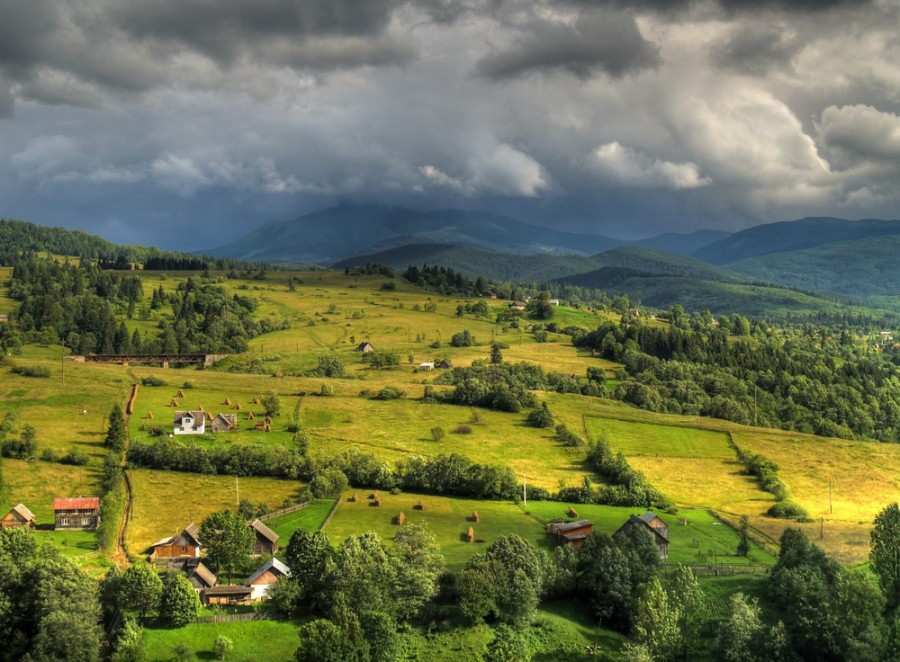

- Походження назви вершини Говерла
- Легенда друга про походження назви «Говерла»: трагічне неземне кохання Говерли та Прута
- Сходження на вершину Говерла
- Маршрут на Говерлу з урочища Заросляк
Усі ми в школі на уроках географії (це не залежить від того подобався нам цей предмет чи ні) вивчали, що найвищою горою України є вершина Говерла, її висота над рівнем моря – 2061 м. Варто додати, що підкорення цієї вершини є найбільш популярним маршрутом серед туристів, які подорожують Карпатами. За хороших погодних умов тут настільки людно, що навіть є можливість зустріти своїх знайомих.
Отже, що відомо про Говерлу. Знаходиться вона на межі двох українських областей – Івано-Франківської та Закарпатської, до кордону з Румунією звідси рукою подати – для цього потрібно подолати 17 км.
За формою Говерла нагадує правильний конус, загалом вона покрита альпійськими луками, а подекуди й чагарниками. Іноді на вершині зустрічаються кам'яні розсипи. До речі, один із витоків Пруту бере свій початок саме в підніжжі гори, поруч знаходяться мальовничі водоспади, загальна висота – 80 м.

Походження назви вершини Говерла
Мандрівники настільки вже звикли до «Говерли», що й не здогадуються, що назва гори запозичена ймовірно з інших мов. Наприклад, з румунської мови назва перекладається – «важко прохідне підвищення». Для когось може й «підвищення», а для України – найвище місце під небом. З перекладу видно, що румуни не вважали, що це гора, а всього-на-всього «узвишшя».
Якщо розглядати версію, що назва вершини взята з угорської, то перекладаємо її – «снігова гора». Цей варіант надзвичайно близький до істини, оскільки більший період року на Говерлі лежить сніг, буває так, що з настанням потепління він тане, а буває так, що продовжує лежати навіть до середини літа. Існує ще також декілька легенд, які розповідають про таємничі та містичні події, котрі передували появі вершини…
Сонце нестерпно дошкуляло Яношу та його групі, але приємна хвойна прохолода лісів допомагала зняти втому та додавала сили. Через два дні група дійшла до підніжжя вершини. На цьому місці було вирішено розбити табір, щоб самим відпочити та дати відпочинок тваринам, котрі тривалий час вже були в дорозі. На відновлення було витрачено два дні, відтак прийняли рішення залишити біля підніжжя трьох людей та коней, всі решта на чолі з бароном вирушили у дорогу.
Чисте небо над головами мандрівників спонукало до руху вперед, але дорога все тривала й тривала… Довго довелося йти людям, вже й чоботи вийшли з ладу. На шляху зустрілися підкорювачам колючі хащі, гострі уламки та товсті колоди, повалені стихією. Людям було важко пересуватися, вони падали без сили як мухи. Барон, бачачи перед собою лише мету, почав злитися на своїх слуг. Одного юнака, котрий дав пропозицію повернутися назад до табору, гордий вельможа відразу пристрелив.
Під вечір виснажена група нарешті вийшла з лісу на широку полонину, де, здавалося, можна було небо зачерпнути у долоні, так воно було близько. Однак, барон ніби й не відчував втоми, пройдений шлях вмить забувся й він, окрилений побаченим, помчався до вершини, щоб першим, як й годиться, ступити на неї.
Перебуваючи під враженнями від величі місця, мандрівники не помітили, що на чисте небо насунулися важкі хмари, отямилися вони аж тоді, коли з неба почав сипати лапатий та густий сніг. Враз знявся холодний морозний вітер, розпочалася хуртовина й розігралася негода. Люди намагалися врятуватися від стихій та почали кидатися хто куди міг. Барон намагався зупинити своїх людей, однак паніка взяла верх.
За ніч нападало стільки снігу, що важко було пересуватися. З усієї групи до табору повернулася тільки третина, решту поглинула негода. Люди були виснаженими, голодними та перемерзлими. Серед тих, хто не повернувся до табору був й пан Янош Надь.
Ті, що повернулися говорили лише одне: «Говерло! Говерло!». У перекладі з мадярської це означає «засніжена вершина». Такої витівки стихії люди не бачили ніколи, адже, погодьтеся, що сніг серед літа – сенсація. Ця подія й спричинила те, що вершина нарешті отримала свою назву, яка найбільше описувала її мінливу сутність.
Сніг улітку – не дивина для цих місць й досі, його можна тут знайти в урвищах та западинах навіть у липні. Сама погода теж дотепер як примхлива панянка – не встигнеш й оговтатися як падає рясний дощ або лапатий сніг.
Легенда друга про походження назви «Говерла»: трагічне неземне кохання Говерли та Прута
Розповідають, що дуже давно у Карпатах жив молодий та вродливий парубок Прут. Заробляв він на життя тим, що працював у горах. Одного разу він затримався в горах допізна й вирішив заночувати у лісі. Знайшов собі гарне сухе місце під розлогою ялиною, розмістився на нічліг й заснув. Сниться хлопцю, що прийшла до нього неземна красуня – вся в зеленому, з чудовим мелодійним голосом. Усю ніч вона йому співала й гладила по голові, а над ранок, коли хлопець хотів до неї доторкнутися – вона щезла. Проснувся Прут й дивувався з такого реалістичного сну. Аж дивиться, а на гілці дерева висить зелена стрічка… така, які носила та дівчина.
Дуже сильно припала дівчина йому до душі й він вирішив у будь-який спосіб підкорити її серце, а для цього, спершу, потрібно було не дати їй піти. Наступного вечора Прут ліг під тим самим деревом, вдав що спить глибоким сном й став чекати приходу дівчини. Вона з'явилася, а хлопець відразу підскочив та спіймав її, пригорнув та запитав її ім'я. Дівчина спершу налякалася, а відтак з посмішкою на обличчі сказала, що її звати Говерла.
Відтоді вони більше не захотіли розлучатися, бо покохали один одного. Прут перестав ходити у село, бо Говерла все одно не змогла б з ним піти, оскільки була улюбленою донькою лісового царя. Дійшла одного разу звістка про закоханих до батька дівчини, розізлився він на доньку та прокляв її.
Важко далися вразливій дівчині батькові слова й кинулася вона вниз з високого урвища. Не встигла її голова торкнутися дна, як піднялася жахлива негода, вітер, який руйнував усе на своєму шляху… Над ранок знову зійшло сонце, а на місці урвища височіла висока гора.
Довго шукав Прут свою кохану. Розповідають, що з горя він пішов на нову вершину й більше не повернувся до людей, а невдовзі з вершини потекла річка, яку люди й назвали – Прут. Так закінчилася історія кохання, якій судилось мати продовження в явищах природи…
Сходження на вершину Говерла
Хороша новина для новачків: підкорити Говерлу неважко, адже гора є надзвичайно зручною для підкорення. Сама вершина – це природній оглядовий майданчик, панорами, які відкриваються – тішать очі та наповнюють душу. Звідси, за хороших погодних умов, можна розгледіти Чорногірський хребет, побачити Івано-Франківськ та Коломию, також обсерваторію на вершині Піп Іван.
Маківка Говерли вкрита альпійськими травами, на ній встановлено флагшток з блакитно-жовтим стягом. Також тут встановлено тризуб та хрест. Раніше через вершину проходив польсько-чехословацький державний кордон, тому тут ще досі стоїть пам'ятний обеліск.
Говерла найбільш відвідуване місце Українських Карпат. Сюди здійснюють сходження щороку тисячі людей від травня аж до вересня. Відвідувати ці місця в іншу пору рекомендується лише професійним альпіністам.
Оскільки вершина знаходиться на території заповідника, то тут не можна смітити, а втім, залишати після себе побутове сміття не можна ніде. Природа не любить цього й ніколи не сприятиме вдалій мандрівці тим, хто засмічує її.
На саму вершину можна добратися декількома способами. До речі, усі вони відрізняються один від одного за рівнем складності, хоча й за протяжністю дещо схожі – 10-16 км; висота підйому – від 1150-1350 м. Бувалі мандрівники рекомендують назад обирати інший шлях, щоб оглянути більше цікавих місць.
Який би маршрут не обрав мандрівник, він повинен пам'ятати про те, що тільки хороша фізична підготовка допоможе максимально комфортно здійснити сходження на вершину. Погодьтесь, що йти постійно вгору – це не розважальна програма, тут потрібно враховувати також й зручність свого одягу та взуття, слідкувати за диханням.
Практика свідчить, що приблизно на висоті 1500 м над рівнем моря найбільш суттєво відчувається нестача кисню.
У хороший погожий день шлях на Говерлу займе близько 3 годин. Тим, кому вдасться подолати цей шлях відкриється нерукотворна краса природи. Варто також звернути увагу на власну безпеку, адже схили вершини є надзвичайно стрімкими, а у дощову погоду – слизькими. Одягайте зручне взуття, котре не пропускатиме надмірної вологи. Також варто пам'ятати про те, що у горах, окрім мандрівників ще проживають дикі звірі, тому дивіться пильно під ногоги, щоб випадково не ступити на гадюку. Далі розглянемо декілька маршрутів, котрі пролягають через вершину. Маршрут на Говерлу з урочища Заросляк
Сходження на Говерлу розпочинається біля спортивно-туристичної бази «Заросляк». Загальна протяжність – 7,5 км, сама висота виходу становить 1260 м, найвища точка – вершина Говерла (2061 м). Часова тривалість – 5-6 год.
Для бувалих мандрівників маршрут не є важким, але спершу розповімо про добирання. Добратися до бази найзручніше з смт Ворохта. Далі проїхавши уздовж річки Прут, натрапляємо на розгалуження шляху. Якщо звернути ліворуч, то можна дійти аж до колишнього польсько-чеського кордону, а відтак аж до самої вершини. Шлях уздовж лівого потоку коротший, але потрібно врахувати перехід через Прутець Кознєский.
Дорога ця хоча й коротша, проте її важче подолати. Стежина вестиме уздовж річки вгору, а відтак заведе у ліс, а потім виведе на полонину. Наступні 2 км доведеться підніматися стрімкими схилами. Поступово дорога виведе до першого, а відтак і до другого плеча Говерли.
Навколишня краса вразить кожного, оскільки Говерла – найвища точка України, тому звідси у погожий день можна з насолодою розглядати навколишні простори.
First of all, mountain hiking is a good rest from everyday routine and bustling city life. Nevertheless, it is always a challenge. It’s an opportunity to test your strength and endurance. However, if you decide to take this step, you will be rewarded with breathtaking views and unforgettable experience. Mount Hoverla (2061 m) – is the highest peak of Ukraine. Nevertheless, the route to the top is not difficult. Almost everyone can climb Hoverla and take a selfie from the highest point of Ukraine. Sounds tempting, doesn’t it? The route to Hoverla’s top lies through the most stunning landscapes in the Ukrainian Carpathians. It’s the best place to enjoy the beauty of unspoiled Carpathian nature. Hoverla climbing will give you the great sense of lightness and freedom